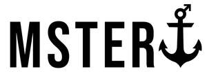

Trade Mark Journal No.2025/026 27 June 2025
UK00004218850 13 June 2025 (9,10,25,35)

- Class 9
- Eyeglasses for sports; Sunglass temples; Magnifying eyeglasses; Cords for sunglasses; Lenses for sunglasses; Cases for sunglasses; Magnetic clip-on sunglass lenses; Clip-on sunglasses; Sunglass cords; Optical lenses for use with sunglasses; Boxes [cases] for sunglasses; Eyeglass lenses; Fashion eyeglasses; Chains for spectacles and for sunglasses; Prescription eyewear; Prescription eyeglasses; Covers for sunglasses; Sun glasses; Replacement lenses for glasses; Glasses Frames for spectacles and sunglasses; Lenses for glasses; Cases for spectacles and sunglasses; Lenses for eyeglasses; Optical lenses for sunglasses; Frames for sunglasses; Chains for spectacles and sunglasses; Protective eyeglasses; Glasses frames; Eyewear Sunglasses frames; Sunglass lenses; Spectacles [glasses]; Glasses, sunglasses and contact lenses; Eyewear pouches; Cases for eyeglasses and sunglasses; Straps for sunglasses; Sunglasses for pets; Optical lenses for eyeglasses; Prescription glasses; Anti-glare glasses; Chains for sunglasses; Prescription sunglasses; Sunglasses Lenses for spectacles; Frames for eyeglasses; Fashion sunglasses Eyeglasses.
- Class 10
- Sex aids Socks (Elasticated -) for medical purposes; Medical hosiery; Love dolls [sex dolls]; Sexual activity apparatus, devices and articles; Flight socks; Sexual activity apparatus; Artificial penises, being adult sexual aids; Inflatable life-sized dolls used in sexual activity; Artificial vaginas, being adult sexual aids; Artificial penises [adult sexual stimulation aids]; Anal plugs; Sexual activity articles; Ladies' stockings [surgical]; Socks for diabetics; Penis enlargers, being adult sexual aids; Sexual activity devices; Corsetry for surgical purposes; Benwa balls, being adult sexual aids; Vibrators, being adult sexual aids; Latex medical gloves; Marital aids; Socks for varicose veins; Portable urination aids for women; Condoms; Adult sexual aids; Sex toys; Prosthetic socks for limbs.
- Class 25
- Knee-high stockings Bootees (woollen baby shoes); Pants; Trousers; shorts; T-shirts; Shirts; Footless socks; Women's underwear; Boy shorts [underwear]; Bikinis; Jacket liners; Clothing; Ladies' underwear; Bib overalls for hunting; Gloves [clothing]; Thermal socks; Socks and stockings; Soles for japanese style sandals; Dress shirts; Functional underwear; Vests (Fishing -; ) Clothes; Reversible jackets; Tennis socks; Cashmere clothing; Down vests; Yoga shirts; Toe straps for zori [Japanese style sandals]; Leather garments; Gym shorts; Leather (Clothing of -); Teddies [underclothing]; Short-sleeved shirts; Lingerie; Ankle socks; Clothing of leather; Trunks [underwear]; Linen clothing; Corsets; Leather slippers; Slipper socks; Insoles for shoes and boots; Shorts [clothing]; Corsets [underclothing]; Sweatshirts; Toe straps for Japanese style sandals [zori]; Sleepwear; Bandeaux [clothing]; Knit jackets; Camouflage shirts; Bra straps [parts of clothing]; Vests; Japanese style socks (tabi); Knit shirts; Inner socks for footwear; Men's underwear; Latex clothing; Gloves as clothing; Japanese style sandals of leather; Fleece shorts; Woolen clothing; Woollen tights; Capes (clothing); Fishing vests; Wind vests; Non-slip socks; Veils [clothing]; Men's and women's jackets, coats, trousers, vests; Gussets for underwear [parts of clothing]; Negligees; Sport stockings; Furs [clothing]; Gym suits; Sweat shirts; Aprons [clothing]; Ramie shirts; Jerseys [clothing]; Collars [clothing]; Wristbands [clothing]; Bras; Men's socks; Thongs; Hoods [clothing]; Bib shorts; Pop socks; Japanese style socks (tabi covers); Sweat-absorbent underclothing [underwear]; Water socks; Sports vests; Jeans; Toe socks; Fleece vests; Garments for protecting clothing; Clothing layettes; Wind-resistant vests; Swimwear; Soccer shirts; Turtleneck shirts; Denims [clothing]; Corduroy shirts; Sweat-absorbent socks; Short-sleeved T-shirts; Knitted gloves; Shirts for suits Leggings [trousers]; Shapewear; Shoes; Belts [clothing]; Athletics vests; Trouser socks; Leather waistcoats; Leather shoes; Jackets [clothing]; G-strings; Collared shirts; Embroidered clothing Slips [undergarments]; Jogging bottoms [clothing]; Gabardines [clothing]; Button-front aloha shirts; Scrimmage vests; Underclothes; Hosiery; Strapless bras; Maillots [hosiery]; Sleep shirts; Vest tops; American football socks; Leather clothing; Insoles [for shoes and boots]; Waistcoats [vests]; Leather jackets; Anti-sweat underwear; Pantyhose; Sleeved jackets; Rainproof jackets; Men's dress socks; Aloha shirts; Esparto shoes or sandles; Socks for men; Ready-to-wear clothing; Leather pants; Sleeveless jerseys; Layettes [clothing]; Knitwear [clothing]; Nipple pasties being underclothing; Jockstraps [underwear]; Mock turtleneck shirts; Pique shirts; Camouflage jackets; Sweat-absorbent underwear; Printed t-shirts; Panties; Sock suspenders; Toe straps for Japanese style wooden clogs; Corsets [clothing, foundation garments]; Hunting vests; Kerchiefs [clothing]; Sports socks; Night shirts; Slippers; Bridal garters; Shirt yokes; Golf shirts; Football shirts; Briefs [underwear]; Underclothing; Blouson jackets; Underpants; Socks; Hooded sweat shirts; Long sleeved vests; Disposable underwear; Turtleneck pullovers; Quilted jackets [clothing]; Fur jackets; Windproof clothing; Anklets [socks]; Woollen socks; Knickers; Underwear; Knitted underwear; Camouflage vests; Fleece jackets; Long underwear; Open-necked shirts; Yoga socks; Bodices [lingerie]; Casual shirts; Undergarments; Parts of clothing, footwear and headgear; Teddies [undergarments]; Underwear for women; Gym boots; Nightwear; Strapless brassieres; Bed socks; Short-sleeve shirts; Bottoms [clothing]; Woven shirts; Headbands [clothing]; Tee-shirts; Long-sleeved shirts; Bomber jackets; Oilskins [clothing]; Babies' pants [underwear]; Yokes (Shirt -); Silk clothing; Nappy pants [clothing]; Windproof jackets; Headbands for clothing; Thermal underwear; Running vests; Anti-perspirant socks; Knitted clothing; Valenki [felted boots]; Trousers of leather; Underwear (Anti-sweat -); Quilted vests; Polo shirts; Sleeveless jackets; Leisure wear.
- Class 35
- Retail services connected with the sale of clothing and clothing accessories; Wholesale services relating to cups and glasses.
mr massage ltd